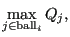

Next: removesliver.f Up: Mesh refining procedure Previous: projectvertexnodes.f Contents
In smoothbadvertex the position of all subsurface bad nodes  (surface bad nodes
are not moved!) is optimized using the optimizer fminsi [77] by
minimizing the quality of the ball of
(surface bad nodes
are not moved!) is optimized using the optimizer fminsi [77] by
minimizing the quality of the ball of  . So we are looking for a minimum of
the function:
. So we are looking for a minimum of
the function:
 |
(990) |
by modifying the position of node i, i.e changing its x-, y- and z-coordinates (three parameters).